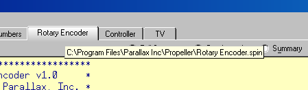

Clicking on an edit tab brings its edit page into view. You can switch between open files by: 1) pressing Alt+CrsrLeft or Alt+CrsrRight, or 2) pressing Ctrl+Tab or Ctrl+Shift+Tab. If you let the mouse pointer hover over an edit tab long enough it will display a hint message with the full path and filename of the file it represents. The source code in the edit page is automatically syntax highlighted, both in foreground and background colors, to help distinguish block types, element types, comments vs. executable code, etc.

Hover the mouse over an edit tab to see the full path and file name that tab contains.
Each edit page can display source code in one of four views:
The view mode can be seen or changed, individually for each edit tab, by:
Note that the Documentation view can not be entered if the object can not be fully compiled at that moment.
Since a project can consist of many objects, developing a project can be awkward unless you can see both the object you're working on and the object you're interfacing to at the same time. The Editor pane helps here by allowing its edit tabs to be dragged and dropped to different locations. For example, once multiple objects are open, you can use the left mouse button to select and drag the edit tab of an object down towards the bottom half of the Editor pane and simply drop it there. The display changes to show you a new edit tab region where you just dropped that edit tab. You can continue to drag and drop edit tabs to this new region if you wish. See Viewing and Arranging Multiple Objects.
Propeller Help Version 1.2
Copyright © Parallax Inc., dba Parallax Semiconductor
6/17/2011